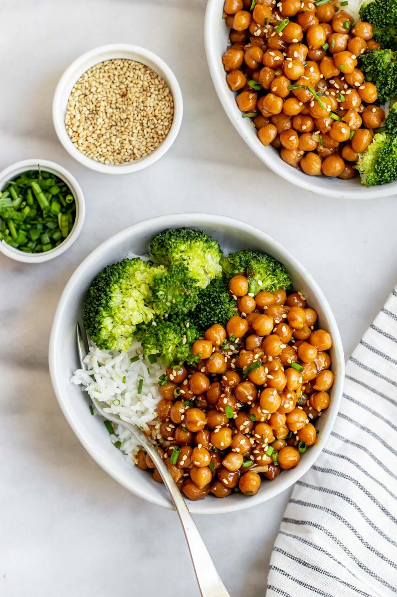
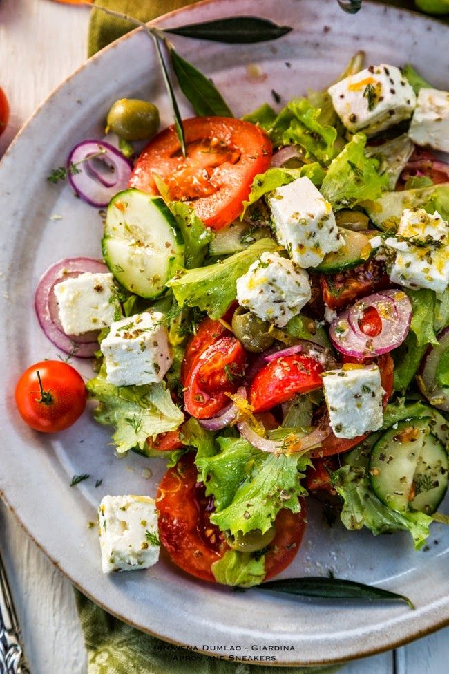

1 / 6

2 / 6
3 / 6
4 / 6

5 / 6

6 / 6
What is posture?
Posture is how you hold your body. There are two types:
Dynamic posture is how you hold yourself when you are moving, like when you are walking, running, or bending over to pick up something. Static posture is how you hold yourself when you are not moving, like when you are sitting, standing, or sleeping.
It is important to make sure that you have good dynamic and static posture.The key to good posture is the position of your spine. Your spine has three natural curves at your neck, mid back, and low back.
Correct posture should maintain these curves, but not increase them. Your head should be above your shoulders, and the top of your shoulder should be over the hips.
An essential nutrient is a nutrient that the body cannot synthesize on its own — or not to an adequate amount — and must be provided by the diet. These nutrients are necessary for the body to function properly. The six essential nutrients include carbohydrates, protein, fat, vitamins, minerals and water. Carbohydrates Carbohydrates are the main energy source for the brain. Without carbohydrates, the body could not function properly. Sources include fruits, breads and grains, starchy vegetables and sugars. Make at least half of the grains you consume whole grains. Whole grains and fruit are full of fiber, which reduces the risk of coronary heart disease and helps maintain normal blood glucose levels. Carbohydrates can be grouped into two categories: simple and complex.
healthy Lifestyles A healthy lifestyle can help you thrive as you move through your life's journey. Making healthy choices isn't always easy it can be hard to find the time and energy to exercise regularly or prepare healthy meals. However, your efforts will pay off in many ways, and for the rest of your life. Steps you can take: Be physically active for 30 minutes most days of the week. Break this up into three 10-minute sessions when pressed for time. Healthy movement may include walking, sports, dancing, yoga or running. Eat a well-balanced, low-fat diet with lots of fruits, vegetables, and whole grains. Choose a diet that's low in saturated fat and cholesterol, and moderate in sugar, salt and total fat. Avoid injury by wearing seatbelts and bike helmets, using smoke and carbon monoxide detectors in the home, and using street smarts when walking alone. If you own a gun, recognize the dangers of having a gun in your home. Use safety precautions at all times. Don't smoke, and quit if you do. Ask your health care provider for help. UCSF offers a smoking cessation program. If you drink alcohol, drink in moderation. Never drink before or when driving, or when pregnant. Ask someone you trust for help if you think you might be addicted to drugs or alcohol.
It's well-established that sleep is essential to our physical and mental health. But despite its importance, a troubling percentage of people find themselves regularly deprived of quality sleep and are notably sleepy during the day. Though there's a wide range of causes and types of sleeping problems, expert consensus points to a handful of concrete steps that promote more restful sleep. For many people, trying to implement all these strategies can be overwhelming. But remember that it's not all-or-nothing; you can start with small changes and work your way up toward healthier sleep habits, also known as sleep hygiene. To make these sleep hygiene improvements more approachable, we've broken them into four categories: Creating a Sleep-Inducing Bedroom Optimizing Your Sleep Schedule Crafting a Pre-Bed time Routine Fostering Pro-Sleep Habits During the Day In each category, you can find specific actions that you can take to Make it easier to fall asleep, stay asleep, and wake up well-rested.